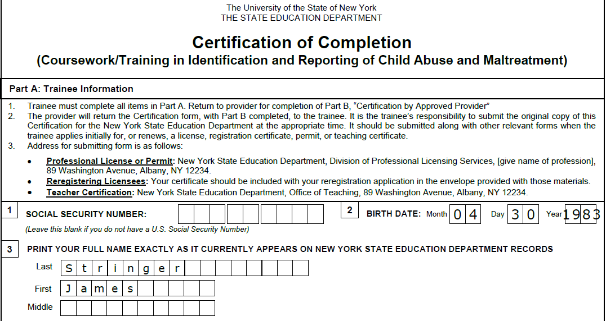

Identification and Reporting of Child Abuse and Maltreatment
As part of my commitment to creating a safe and supportive environment for children, I completed a certification course on the Identification and Reporting of Child Abuse and Maltreatment. This course provided me with essential knowledge and skills to recognize signs of abuse and understand the legal responsibilities involved in reporting suspected cases. It also allowed me to implement social and emotional support in my social studies and advisory classes.
This training has proved invaluable in my practice as I have, unfortunatley, had to make use of this training in my role as a teacher. These experiences have reinforced the importance of vigilance and proactive measures in safeguarding the well-being of students.